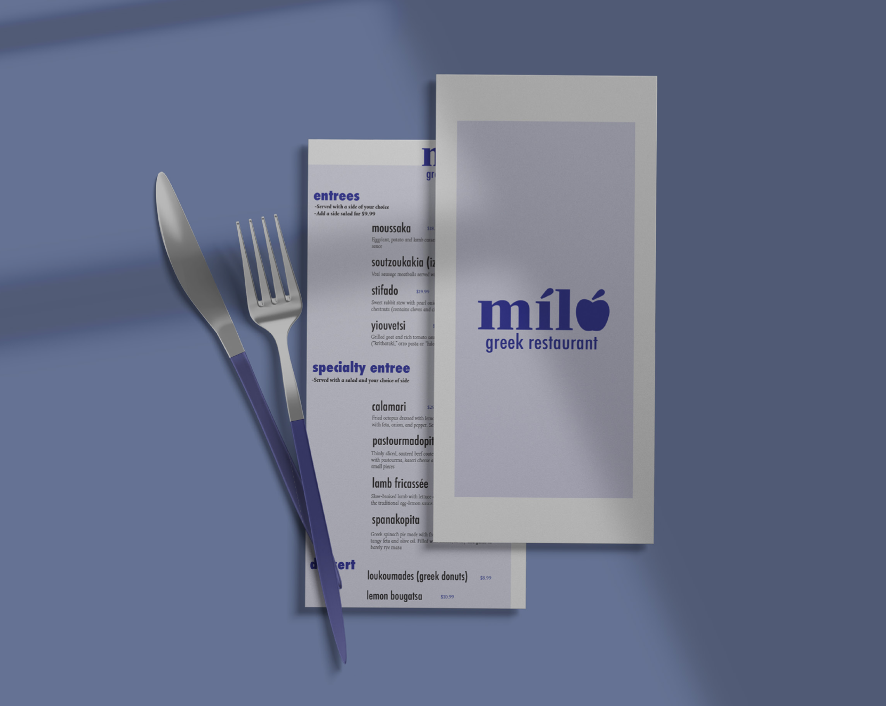
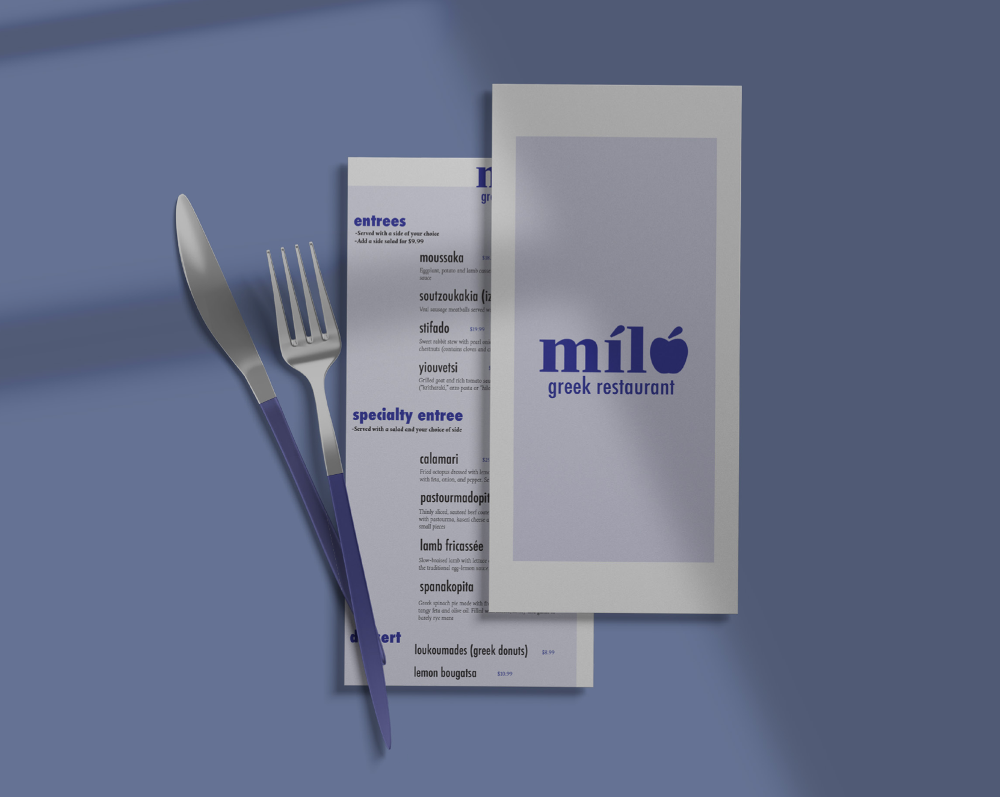

Overview
Purpose
My design portfolio is a space to showcase my work, creativity, and expertise in graphic design, branding, UI/UX, and digital illustration. It provides potential clients, employers, and creative collaborators with insight into my process, aesthetic, and problem-solving approach.
Audience
This portfolio is tailored for potential employers seeking talented designers, freelance clients in need of branding and digital content, and creative professionals looking for collaboration.
Branding
Website Logo
Style Guide
Color Palette
| Primary | Secondary | Accent 1 | Accent 2 |
|---|---|---|---|
| #1E1E1E (Dark Charcoal) | #9b39e6 (Purple) | #F1FAEE (Soft White) | #A8DADC (Teal) |
Typography
Heading Font: Poppins (Modern & Clean)
Paragraph Font: Lora (Elegant & Readable)
Navigation
Site Map
Content
Home
Welcome to my design portfolio! Here, you’ll find a collection of my latest creative projects, including branding, UI/UX design, and digital illustrations. I’m passionate about crafting visually compelling designs that communicate ideas effectively.


Portfolio
My portfolio showcases a diverse range of design projects, from corporate branding to digital art and web design. Each piece represents a unique challenge and an opportunity to solve problems visually.
 

About Me
I'm Kelsey Schaefermeyer, a passionate graphic designer with a love for visual storytelling. My journey into design started with a fascination for colors, typography, and digital media.


Contact
Let’s connect! Whether you're interested in a collaboration, freelance work, or just want to chat about design, feel free to reach out.

Why Visit My Site?
See My Design Work Up Close
If you’re here, you’re probably looking for creative design solutions. I’ve put together a collection of my best work—everything from branding and UI/UX to digital illustrations. You’ll get a real sense of my style and approach.
Understand How I Think as a Designer
Great design isn’t just about making things look good—it’s about problem-solving. I share my thought process, from initial sketches to final execution, so you can see how I bring ideas to life.
Find Inspiration & Connect
Whether you're a fellow designer, student, or creative professional, I hope my work sparks new ideas for you. If you want to collaborate or just chat about design, I’d love to connect!
What You Can Do Here
Explore My Portfolio
My work is organized into branding, UI/UX, and digital art categories, making it easy to find what interests you. Each project includes background details, my creative process, and final designs.
Get to Know Me
The "About Me" page gives you a look into my journey as a designer—what inspires me, how I work, and why I love creating. If you’re curious about my background, that’s the place to go.
Reach Out for Work & Collaborations
If you’re looking for a designer or want to collaborate, you can contact me easily through my site. You’ll find an email form and links to my social media to keep the conversation going.
What Makes This Portfolio Different?
A Clean, Professional Showcase
My site isn’t just a collection of images—it’s designed to be an intuitive, immersive experience. Everything is structured so you can navigate easily and focus on the work itself.
A Portfolio That Feels Personal
Every choice in my portfolio—from color schemes to typography—reflects my unique design identity. It’s more than just work; it’s a glimpse into my creative world.
Balancing Aesthetics with Strategy
Many portfolios focus on making things look good, but I go beyond that. My work prioritizes user experience and storytelling, ensuring designs don’t just look great but serve a purpose.
Wireframes